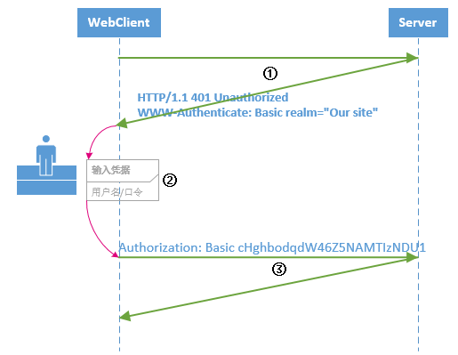
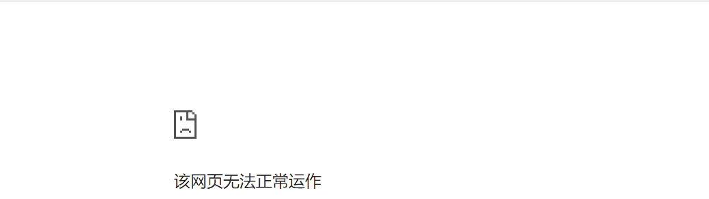

https://www.cnblogs.com/JulianHuang/p/10345365.html
HTTP 基本认证 在 HTTP 中，HTTP 基本认证 （Basic Authentication）是一种允许网页浏览器或其他客户端程序以用户名:口令请求资源的身份验证方式，不要求 Cookie、Session Identifier、Login Page 等标记或载体。
所有浏览器都支持 HTTP 基本认证方式；
基本认证原理不保证传输凭证的安全性 ，仅被Base64编码，并没有 Encrypted 或者 Hashed，一般部署在客户端和服务端互信 的网络，在公网 中应用 BA 认证通常与 HTTPS 结合。
BA 标准协议 BA 认证协议的实施主要依靠约定的 请求头 / 响应头 ， 典型的浏览器和服务器的 BA 认证流程：
浏览器请求应用了 BA 协议的网站，服务端响应一个 401 认证失败响应码，并写入WWW-Authenticate响应头，指示服务端支持 BA 协议。Authorization标头，从而避免被质询。
1 2 3 4 HTTP/1.1 401 Unauthorized WWW-Authenticate: Basic realm="our site"
客户端以 Base64 编码用户名:口令，作为Authorization标头值重新发送请求。
1 Authorization: Basic userid:password

所以在 HTTP 基本认证中认证范围与realm有关（具体由服务端定义）。
一般浏览器客户端对于www-Authenticate质询结果，会弹出口令输入窗。
BA 编程实践
ASP.NET Core 网站利用 FileServerMiddleware 将路径映射到某文件资源， 现对该文件资源访问路径应用 Http BA 协议。
ASP.NET Core 服务端实现 BA 认证：
实现服务端基本认证的认证过程、质询逻辑；
实现基本身份认证交互中间件BasicAuthenticationMiddleware，要求对HttpContext使用BA.Scheme；
ASP.NET Core 添加认证计划，为文件资源访问路径启用 BA 中间件，注意使用UseWhen插入中间件（适用于 ASP.NET Core 2.X）。
1 2 3 4 5 6 7 8 9 10 11 12 13 14 15 16 17 18 19 20 21 22 23 24 25 26 27 28 29 30 31 32 33 34 35 36 37 38 39 40 41 42 43 44 45 46 47 48 49 50 51 52 53 54 55 56 57 58 59 60 61 62 63 64 65 66 67 68 69 70 71 72 73 74 75 76 77 78 79 80 81 82 83 84 85 86 87 88 89 90 91 92 93 94 95 96 97 98 99 100 101 102 using System;using System.Net.Http.Headers;using System.Security.Claims;using System.Text;using System.Text.Encodings.Web;using System.Threading.Tasks;using Microsoft.AspNetCore.Authentication;using Microsoft.Extensions.Logging;using Microsoft.Extensions.Options;namespace EqidManager.Services { public static class BasicAuthenticationScheme { public const string DefaultScheme = "Basic" ; } public class BasicAuthenticationOption :AuthenticationSchemeOptions { public string Realm { get ; set ; } public string UserName { get ; set ; } public string UserPwd { get ; set ; } } public class BasicAuthenticationHandler : AuthenticationHandler<BasicAuthenticationOption> { private readonly BasicAuthenticationOption authOptions; public BasicAuthenticationHandler ( IOptionsMonitor<BasicAuthenticationOption> options, ILoggerFactory logger, UrlEncoder encoder, ISystemClock clock ) : base (options, logger, encoder, clock ) authOptions = options.CurrentValue; } protected override async Task<AuthenticateResult> HandleAuthenticateAsync ( if (!Request.Headers.ContainsKey("Authorization" )) return AuthenticateResult.Fail("Missing Authorization Header" ); string username, password; try { var authHeader = AuthenticationHeaderValue.Parse(Request.Headers["Authorization" ]); var credentialBytes = Convert.FromBase64String(authHeader.Parameter); var credentials = Encoding.UTF8.GetString(credentialBytes).Split(':' ); username = credentials[0 ]; password = credentials[1 ]; var isValidUser= IsAuthorized(username,password); if (isValidUser== false ) { return AuthenticateResult.Fail("Invalid username or password" ); } } catch { return AuthenticateResult.Fail("Invalid Authorization Header" ); } var claims = new [] { new Claim(ClaimTypes.NameIdentifier, username), new Claim(ClaimTypes.Name, username), }; var identity = new ClaimsIdentity(claims, Scheme.Name); var principal = new ClaimsPrincipal(identity); var ticket = new AuthenticationTicket(principal, Scheme.Name); return await Task.FromResult(AuthenticateResult.Success(ticket)); } protected override async Task HandleChallengeAsync (AuthenticationProperties properties ) Response.Headers["WWW-Authenticate" ] = $"Basic realm=\"{Options.Realm} \"" ; await base .HandleChallengeAsync(properties); } protected override async Task HandleForbiddenAsync (AuthenticationProperties properties ) await base .HandleForbiddenAsync(properties); } private bool IsAuthorized (string username, string password return username.Equals(authOptions.UserName, StringComparison.InvariantCultureIgnoreCase) && password.Equals(authOptions.UserPwd); } } }
1 2 3 4 5 6 7 8 9 10 11 12 13 14 15 16 17 18 19 20 21 22 23 24 25 26 27 28 29 30 31 public static class BasicAuthentication { public static void UseBasicAuthentication (this IApplicationBuilder app app.UseMiddleware<BasicAuthenticationMiddleware>(); } } public class BasicAuthenticationMiddleware { private readonly RequestDelegate _next; private readonly ILogger _logger; public BasicAuthenticationMiddleware (RequestDelegate next, ILoggerFactory LoggerFactory ) _next = next; _logger = LoggerFactory.CreateLogger<BasicAuthenticationMiddleware>(); } public async Task Invoke (HttpContext httpContext, IAuthenticationService authenticationService ) var authenticated = await authenticationService.AuthenticateAsync(httpContext, BasicAuthenticationScheme.DefaultScheme); _logger.LogInformation("Access Status：" + authenticated.Succeeded); if (!authenticated.Succeeded) { await authenticationService.ChallengeAsync(httpContext, BasicAuthenticationScheme.DefaultScheme, new AuthenticationProperties { }); return ; } await _next(httpContext); } }
Startup.cs文件添加并启用 HTTP 基本认证。
1 2 3 4 5 6 7 8 services.AddAuthentication(BasicAuthenticationScheme.DefaultScheme) .AddScheme<BasicAuthenticationOption, BasicAuthenticationHandler>(BasicAuthenticationScheme.DefaultScheme, null ); app.UseWhen( predicate:x => x.Request.Path.StartsWithSegments(new PathString(_protectedResourceOption.Path)), configuration:appBuilder => { appBuilder.UseBasicAuthentication(); } );
以上 BA 认证的服务端已经完成，现在可以在浏览器测试：

编程实现 BA 客户端 1 2 3 4 5 6 7 8 9 10 11 12 13 14 15 16 17 18 19 20 21 22 23 24 25 26 27 28 29 30 31 public class BasicAuthenticationClientHandler : HttpClientHandler { public static string BAHeaderNames = "authorization" ; private RemoteBasicAuth _remoteAccount; public BasicAuthenticationClientHandler (RemoteBasicAuth remoteAccount ) _remoteAccount = remoteAccount; AllowAutoRedirect = false ; UseCookies = true ; } protected override Task<HttpResponseMessage> SendAsync (HttpRequestMessage request, CancellationToken cancellationToken ) var authorization = $"{_remoteAccount.UserName} :{_remoteAccount.Password} " ; var authorizationBase64 = "Basic " + Convert.ToBase64String(new ASCIIEncoding().GetBytes(authorization)); request.Headers.Remove(BAHeaderNames); request.Headers.Add(BAHeaderNames, authorizationBase64); return base .SendAsync(request, cancellationToken); } } services.AddHttpClient("eqid-ba-request" , x => x.BaseAddress = new Uri(_proxyOption.Scheme + "://" + _proxyOption.Host + ":" + _proxyOption.Port)) .ConfigurePrimaryHttpMessageHandler(y => new BasicAuthenticationClientHandler(_remoteAccount){}) .SetHandlerLifetime(TimeSpan.FromMinutes(2 ));

{kind=link}
{kind=link}